This set explores fitness girl toned arms through cinematic aesthetics and calm tone under soft lighting. Compositions use close-up with indoor studio, keeping focus clear and tidy. Details like evening dress styling and balanced colors make browsing easy.
Browse fitness images. Page 2 of curated fitness-style portrait collection.
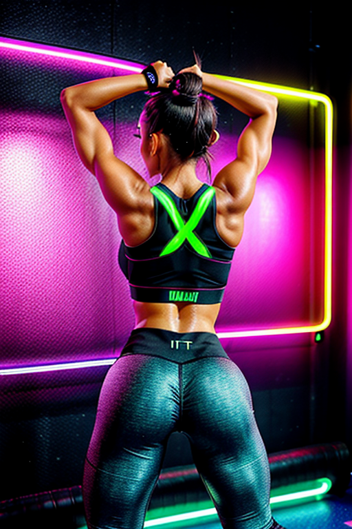 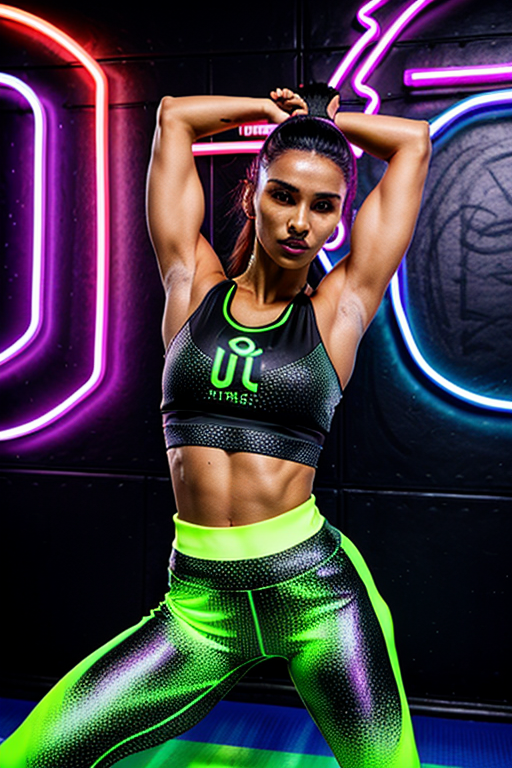 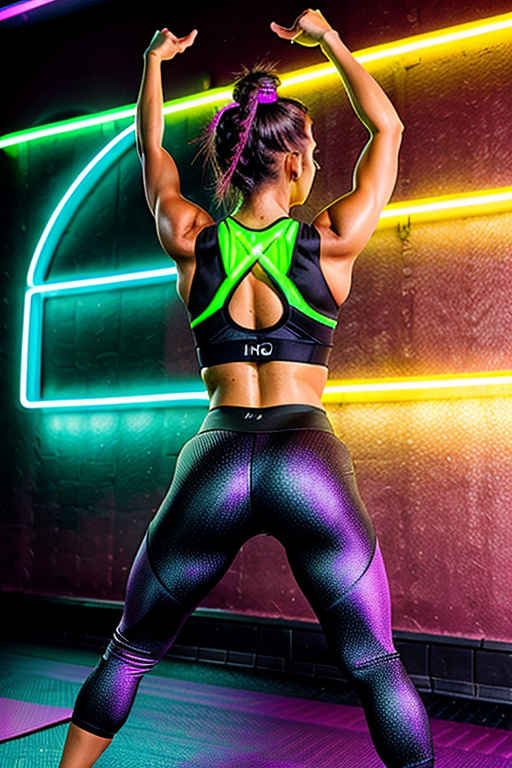 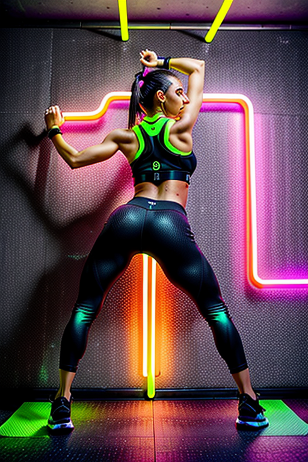 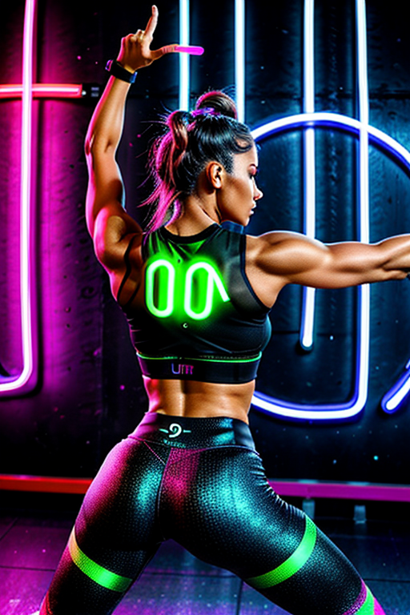 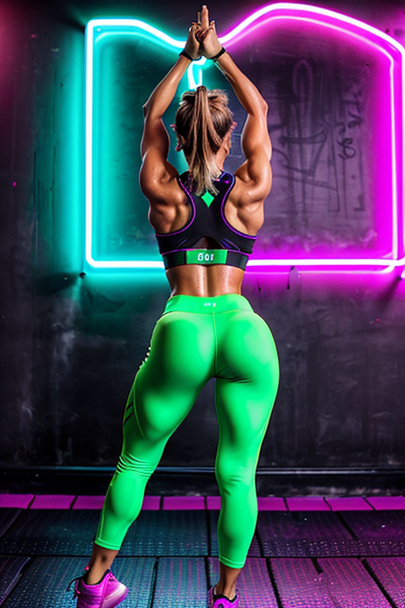
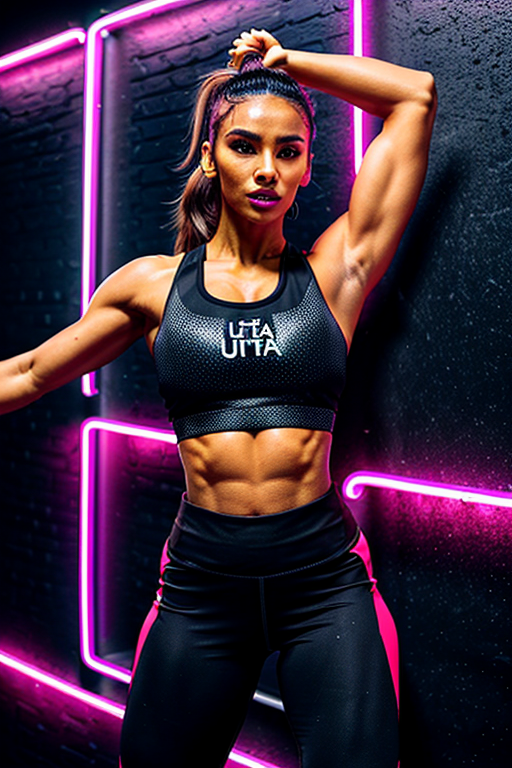
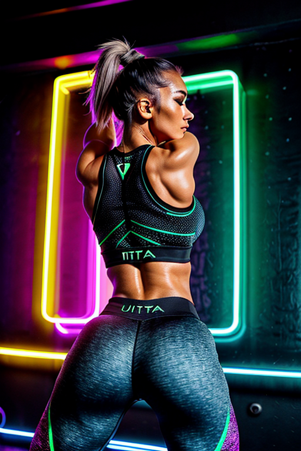
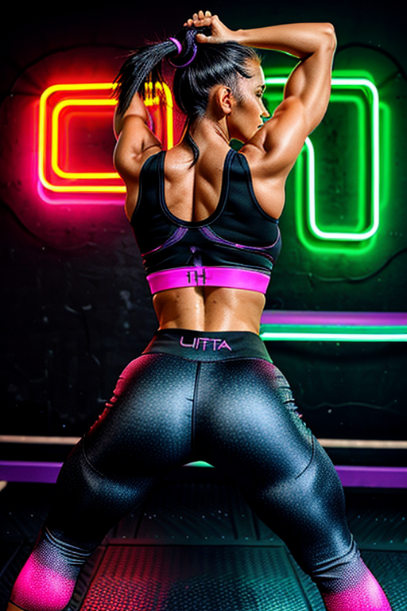
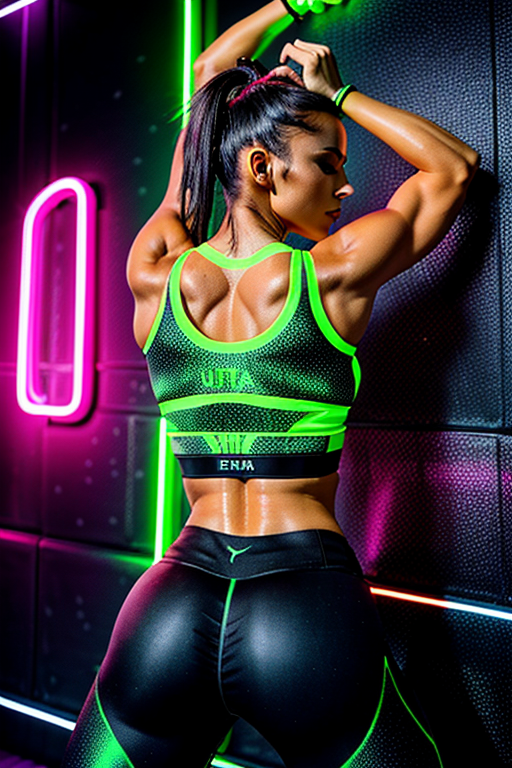
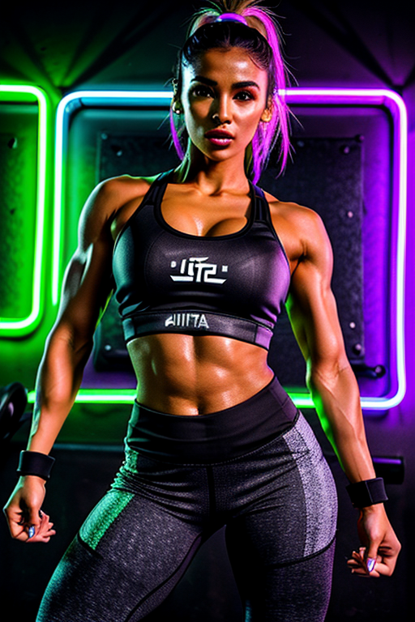
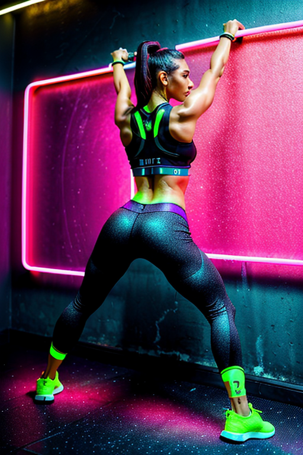
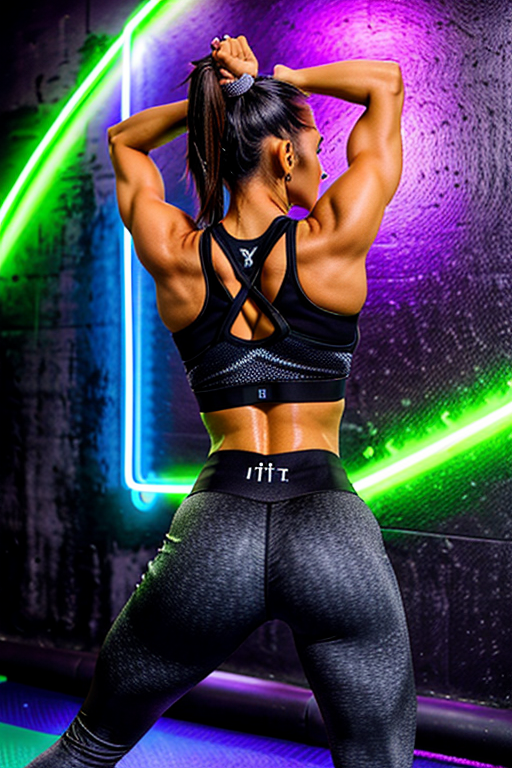
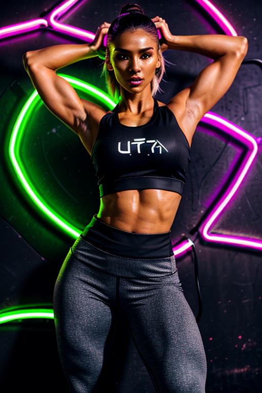
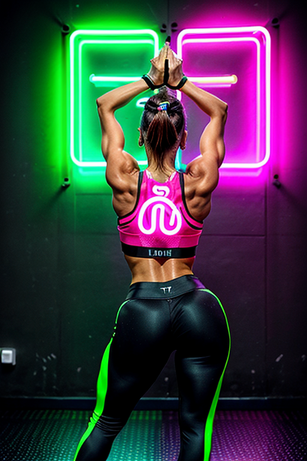
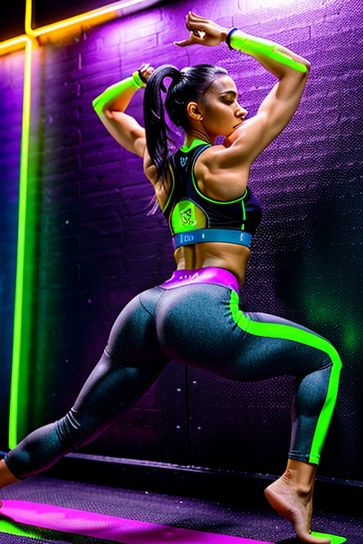
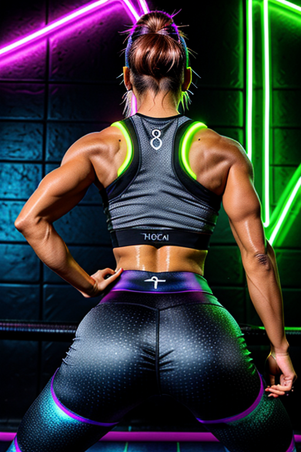
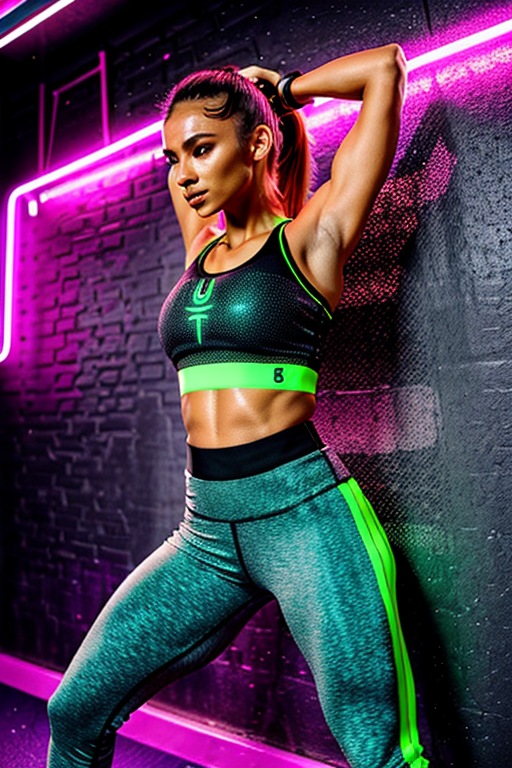
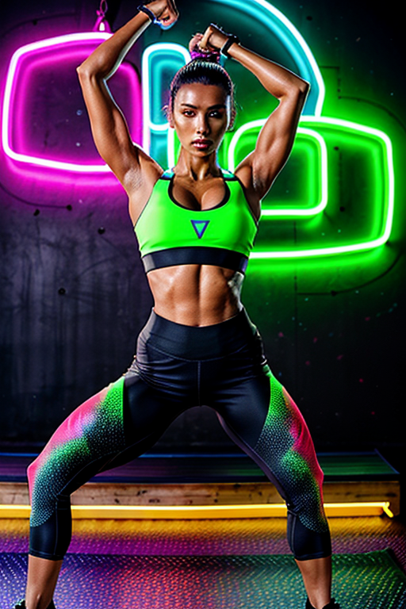
Designed for readers looking into page2, this page emphasizes clarity and consistency. Alt text and headings are optimized to make the content accessible and to provide consistent cues across the site. Subtle differences in wording help avoid duplication across similar pages. If you are comparing alternatives, keep an eye on subtle differences in framing, contrast, and color balance. The image aims to deliver a straightforward visual impression while keeping the file lightweight. A brief explanation clarifies the subject and lighting so visitors can quickly decide where to go next. The image aims to deliver a straightforward visual impression while keeping the file lightweight. A brief explanation clarifies the subject and lighting so visitors can quickly decide where to go next.